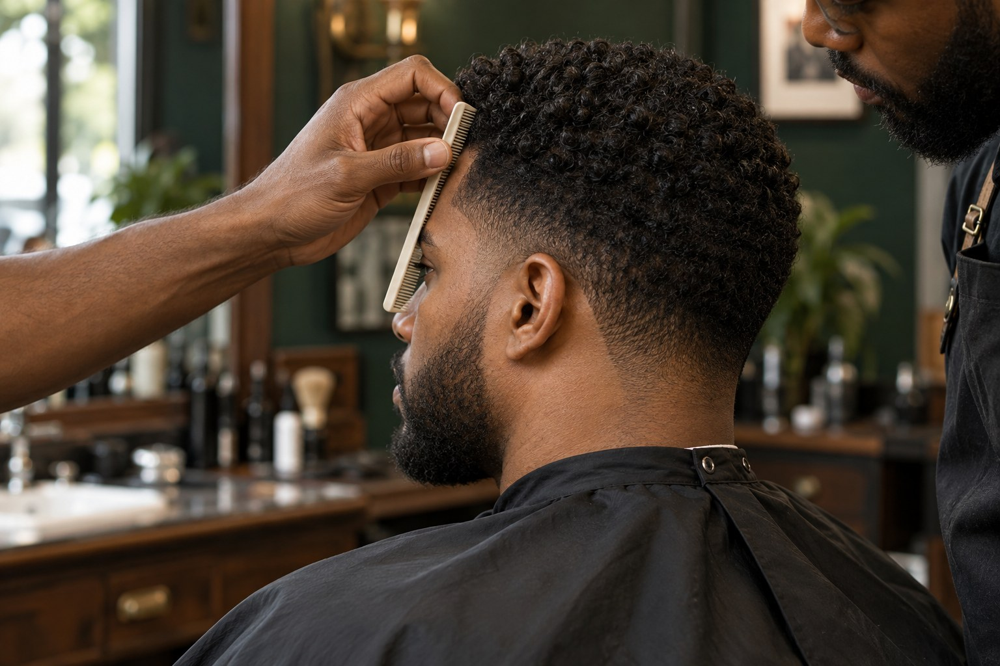

A PRACTICAL GUIDE FOR COMPLETE BEGINNERS
Learn haircutting,
one good step
at a time.
Learn the tools and haircut fundamentals, then follow complete visual cut lessons from the first consultation to the finished shape. Start on a mannequin and build control before you cut on a person.

22 STYLES · THREE LEARNING LEVELS
Choose your next haircut.
Compare the starting hair and finished angles, then learn the tools, head considerations and complete process.
Explore the Haircut Library →TOOLS · SHAPE · THIRTY VISIBLE ACTIONS
Learn how to do a fade.
Study the lever and guards, follow seven fade processes, and build control with fourteen focused drills.
Open the fade course →MAKE THE NEXT CHOICE
Play the Haircut Simulator.
Choose a haircut, use the right tools and controls, and follow a visual process step by step.
Start in Practice mode →YOUR COURSE
A clear next step.
Start with a clean setup, then move through one practical skill at a time.
THE LEARNING PATH
Eight lessons. One skill at a time.
Go in order the first time. Come back to any lesson whenever you need a refresher.
Set up your station
Tools, clean hands, and safe preparation.
LESSON 0215 MINAgree on the haircut
Listen, look, and make a clear plan.
LESSON 0320 MINRead the head
Find landmarks and section the hair.
LESSON 0420 MINControl your clipper
Understand guards, levers, and movement.
LESSON 0530 MINBuild a low fade
Blend short bands with a light hand.
LESSON 0625 MINUse shears and a comb
Work in small sections with a steady guide.
LESSON 0715 MINCheck and finish
Balance the shape; protect edges and ears.
LESSON 0820 MINReview and improve
Pick a useful drill for your next cut.
A note on practice: This guide teaches fundamentals, not certification. Start on a mannequin. Work with a willing model only when the basics feel controlled; ask an experienced barber for help with techniques you have not learned.